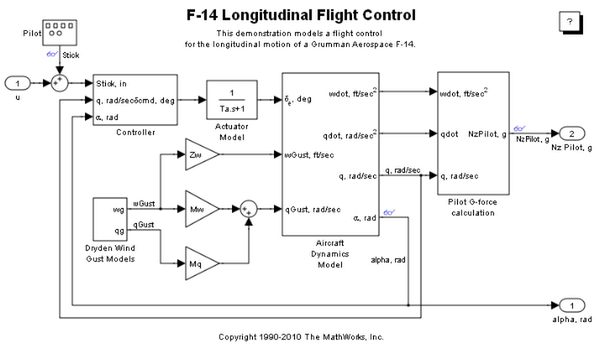
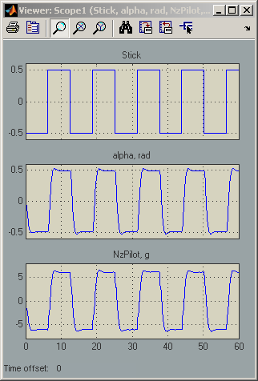

F-14 Longitudinal Flight Control
This demonstration models a flight control for the longitudinal motion of a Grumman Aerospace F-14 Tomcat. First order linear approximations of the aircraft and actuator behavior are connected to an analog flight control design that uses the pilot's stick pitch command as the set point for the aircraft's pitch attitude and uses aircraft pitch angle and pitch rate to determine commands. A simplified Dryden wind gust model is incorporated to perturb the system.
Some updates to the original f14.mdl file included in this version:
The model scope for viewing signals, Scope1, was created using the Signal and Scope Manager from the Tools menu. The Signal and Scope Manager allows you to instrument your model without having to add blocks to the model. If you close a model scope, such as for batch simulations, you can later reopen it by double-clicking the "glasses" icon on the signal of interest.
Parameters for the model are stored in a file named f14dat.m. This file is loaded by the model into the model workspace. You can view and edit data in the model workspace directly by using the Model Explorer, which is launched using the View/Model Explorer menu item or by launching it from the Model Explorer toolbar button in the Simulink® editor.
 